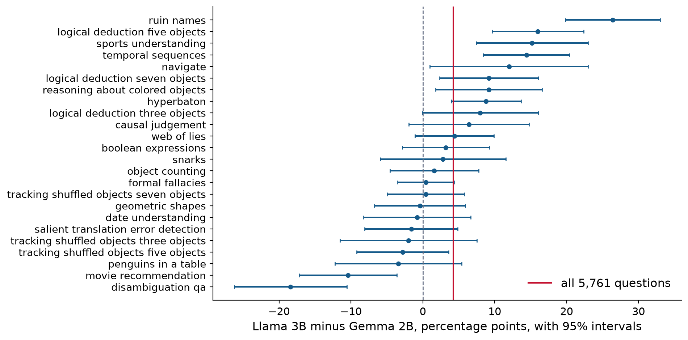
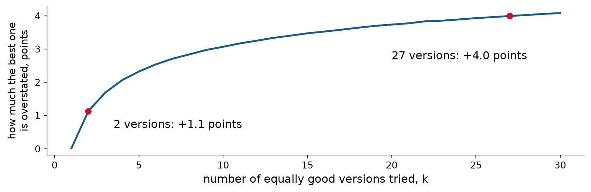

Are the disagreements really independent? Benchmark questions come in tasks, so we resample whole tasks.
Does picking the best overstate it? The winner’s curse, and choosing what to report after seeing the results.
What else does switching cost? Memory, hardware, speed, and more.
Then Lab 5: a team decides whether to switch from Llama-3.1-8B to Qwen2.5-7B.
In HW5: question 1 is Problem 2(c), question 2 is Problem 1(d) and 2(e), and question 3 is Problem 2(d).
Today’s data: BIG-Bench Hard
5,761 multiple-choice questions in 24 tasks, such as putting adjectives in the right order, tracking objects that are swapped around, and judging what caused an event.
Eight open models of different sizes, all run the same way by Hugging Face’s Open LLM Leaderboard. We know whether each model got each question right.
A model’s answer is the option it rates as most likely. It does not write a reply.
The tasks were chosen because earlier models did worse on them than the average human rater.
Optional reading: Suzgun et al. (2023), Sections 1–2. Lab 5 shows a question and explains the scoring.
1. Are the disagreements really independent?
A small model for a laptop
A team needs a model that fits in a laptop’s memory. Two candidates: Google’s Gemma-2-2B (5.2 GB) and Meta’s Llama-3.2-3B (6.4 GB).
Llama 3B right
Llama 3B wrong
Gemma 2B right
1,579
819
Gemma 2B wrong
1,063
2,300
Llama 3B answers 4.2 points more questions correctly (45.9% versus 41.6%). McNemar’s exact p-value is 2 \times 10^{-8}, and the paired 95% interval is [2.8, 5.7] points.
Both treat the 1,882 disagreements as independent tosses.
The gap changes from task to task

From −18 points on disambiguation to +26 on ruin names. A task that tilts toward one model tilts all its disagreements together.
The task bootstrap
Week 4’s cluster bootstrap, with each question’s pair of results kept together.
Draw 24 task names, with replacement, from the 24 tasks.
Take every question in each drawn task, with both models’ results.
Compute the difference in accuracy.
Repeat 2,000 times. The middle 95% of the differences is the interval.
Keeping the pairs together keeps the benefit of pairing. Resampling whole tasks keeps the variation between tasks.
Two intervals answer two questions
95% interval for Llama 3B minus Gemma 2B
Population it describes
Paired, questions independent
[2.8, 5.7] points
new questions from these 24 tasks
Task bootstrap
[0.4, 8.1] points
new tasks like these
The task bootstrap interval is 2.6 times as wide. Here both exclude 0. In the lab, check whether they agree for Llama-3.1-8B and Qwen2.5-7B.
Which population matters depends on the users. A team whose users ask their own kinds of questions cares about new tasks.
2. Does picking the best overstate it?
The winner’s curse
A team tries two prompts with the same true accuracy p. Each estimate has a standard error of \sigma = 2 points, and the team reports whichever scores higher.
The higher of two noisy estimates is usually the luckier one. On average it overstates p by E\bigl[\max(\hat p_1, \hat p_2)\bigr] - p = \sigma \sqrt{\frac{1 - \rho}{\pi}}, where \rho is the correlation between the two estimates. This is the winner’s curse.
Prompts scored on different questions, \rho = 0: 1.1 points too high.
Prompts scored on the same questions, \rho = 0.8: 0.5 points too high.
HW5 1(d) derives this, with its own numbers, and asks why the same questions help.
Picking the best of many versions
Now the team tries kversions instead of two prompts. A version can be a prompt, a model, or a set of settings. All k have the same true accuracy and a standard error of 2 points, each is scored on different questions, and the team reports the best.

Even when no version is better than the others, the best of 27 is overstated by about 4 points on average.
Benchmaxxing
Pushing a benchmark number as high as possible, instead of measuring how good the model is, is called benchmaxxing.
One way: try many versions and publish the best. Before releasing Llama 4, Meta tested 27 private versions of its model on Chatbot Arena, a leaderboard built from head-to-head votes, and could publish only the best. As the last slide shows, the published score is inflated even if no version is better than the rest.
Another way: choose which tasks to report after seeing the results. That is next.
Singh et al. (2025), “The Leaderboard Illusion,” abstract and the section on private testing; the paper calls the versions “variants.” Optional.
Choosing which tasks to report
The second way to benchmax: choose which tasks to report after seeing the results. The same curse applies.
Gemma-2-2B is 4.2 points worse than Llama-3.2-3B overall. But “Gemma-2-2B beats Llama-3.2-3B by 18 points on disambiguation” is true.
The check: split each task’s questions in half at random. Choose the task on the first half, then measure it on the second half, which played no part in choosing it. Repeat with many random splits.
Gemma’s best task gains 19 points on the half used to choose it and 17 on the other half. The task is real, and Gemma is better at it. But one chosen task is not a summary of two models.
3. What else does switching cost?
Accuracy is one cost among several
Llama-3.1-70B
Llama-3.1-8B
Parameters
70.6 billion
8.0 billion
Memory for the weights at 16-bit, 2 bytes per parameter
141 GB
16 GB
Hardware for the weights alone
at least two 80-GB GPUs
one 24-GB GPU
Accuracy on BBH
69.2%
50.8%
The larger model is 18 points more accurate and needs about 9 times the memory. Other costs:
speed: how long a user waits for an answer;
electricity and the price of the hardware;
online or batch: answering while the user waits, or overnight in bulk;
license terms, and the work of testing and switching to a new model.
Some costs cannot be chosen separately
Example: storing each parameter in 8 bits instead of 16, called quantization, halves the memory. Llama-3.1-8B would need about 8 GB. It can also lower accuracy, so memory and accuracy have to be chosen together.
Discuss: name another pair of costs that move together.
Ask an AI to make the call
Live demo. Ask an AI assistant which model the laptop team should use.
Give it only the two accuracies and the two models’ sizes.
In the same conversation, add the paired table, both intervals, the range of the per-task gaps, and the team’s memory limit.
Discuss: What changed in its answer? Which piece of evidence changed it? Is any claim stronger than the evidence?
HW5 Problem 3 asks you to do this for Qwen and Phi, and then rewrite the recommendation yourself.
Today’s lab
The team built its tool on Llama-3.1-8B. Should it switch to Qwen2.5-7B?
Look at the questions, and how answers are scored.
The paired table and McNemar’s test.
Why pairing helps: break the pairs and watch the standard error.
The task bootstrap: do McNemar and the bootstrap agree?
Can the team keep Llama? A non-inferiority check with a 1-point margin.
Picking the task to brag about.
You will end with what you would tell the team.
HW5 handoff
Problem 1 (no AI): McNemar’s test, Fisher’s exact test, non-inferiority, and the winner’s curse. Tuesday’s lecture and today’s first half.
Problem 2: the team went with Qwen. Could Phi-3.5-mini, at half the memory, replace it? Reuse the lab’s paired table, task_bootstrap(), and one-sided lower bound.
Problem 3: ask an AI to make the call, then rewrite its recommendation.
Do Problem 1 first. Problems 2 and 3 use its results.
What we did today
Benchmark questions come in tasks. The task bootstrap resamples whole tasks and keeps the pairs together.
A question-level interval describes new questions from these tasks; a task-bootstrap interval describes new tasks like these.
Reporting the best of several tries overstates it, and more tries overstate it more. Scoring the tries on the same questions helps.
A task chosen after seeing the results can be real and still unrepresentative.
Accuracy is one cost among several, and some costs move together.